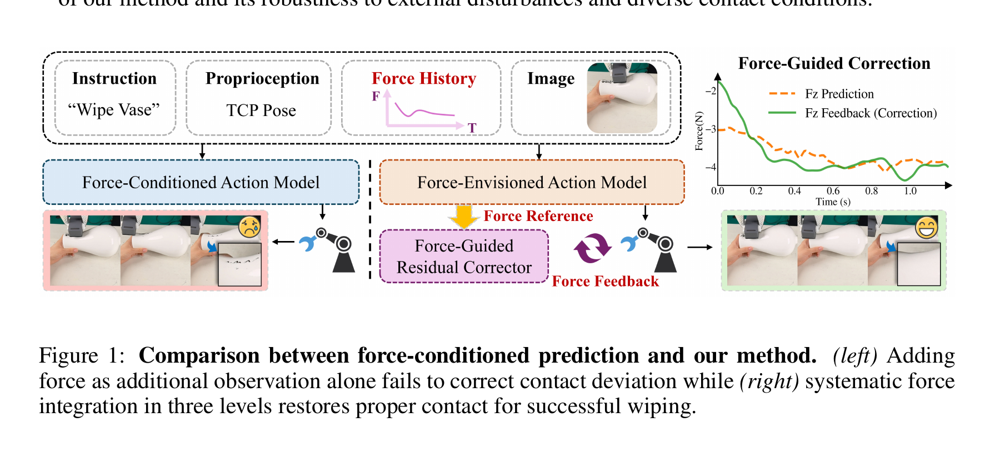

FAWAM: Force-Aware World Action Models for Closed-Loop Contact-Rich Manipulation
He、Yan、Liu、Guo、Lian · 2026 技术报告 · arXiv:2606.08555 v2 · Zotero HD76AE2M
FAWAM 在三个层次用力觉：历史 6 轴力/力矩调制动作表征；WAM 联合预测未来 action chunk 与末端 wrench；执行时用预测 wrench 作参考，把实测偏差送入 residual corrector 在线修动作。
§1 Introduction：为什么把六轴力当输入仍然不够
插入、旋拧、刮擦和装配中，视觉只能间接看到接触；六轴力/力矩能揭示卡住、滑动和碰撞。已有 force-aware policy 往往把历史力信号拼到视觉特征，或在低层控制器中做即时反应。这会告诉策略“现在受了多大力”，却没有要求它预测动作将造成怎样的未来接触。
FAWAM 把力觉贯穿三个层次：历史力/力矩编码用于当前接触状态估计；Force-Envisioned Action Model 联合预测未来 action chunk 与末端力信号；执行期间 Force-Guided Residual Corrector 比较预测力和传感器实测力，在线修正后续动作。世界模型的预测在这里不再只是可视化辅助，而成为反馈基准。
展开原文 · 核心机制
“jointly predicts future actions and end-effector force signals”
§2 Related Work：force-conditioned、force prediction 与 residual correction
ForceVLA 等在表征层融合力信号，解决当前接触感知；混合力—位控制和快速策略做 reactive correction，解决局部稳定；FoAR 等预测未来接触来加权模态。FAWAM 试图把三者连成闭环：感知历史、预想未来、以预测误差纠偏。
它与 OmniVTA 同属多模态 WAM，但传感器与控制接口不同：OmniVTA 聚焦高维触觉 latent 和双流世界模型，FAWAM 使用更紧凑的 6-axis force/torque，并显式输出未来力曲线。后者更易接入工业机械臂，却可能丢失接触位置的空间分布。
§3 力觉不是“再拼一个传感器”
§4 从 force-conditioned 到 force-envisioned

1. 编码历史 wrench
让主策略感知接触状态与趋势。
输入是什么：当前任务提供的原始观测、指令、机器人状态或训练数据。先明确这些输入，才能判断后面的结论是否用了部署时拿不到的信息。
这一步究竟做什么：本步骤执行“编码历史 wrench”。具体来说，让主策略感知接触状态与趋势。 这里处理的只是整条链路中的一个接口：把上一步的结果整理成下一步能够正确读取和继续计算的形式。
输出到哪里：一组比原始输入更紧凑的内部特征；它不是最终动作或画面。这个结果会交给下一步“联合预测 action + wrench”继续处理。
为什么不能省略：模型不能高效地直接在所有原始像素和长序列上推理；这一步把信息压成后续模块能处理、比较和复用的形式。
2. 联合预测 action + wrench
未来力轨迹成为动作后果的低维世界状态。
输入是什么：来自上一步“编码历史 wrench”的产物：一组比原始输入更紧凑的内部特征；它不是最终动作或画面。本步骤还会按论文设置读取当前条件、时间步或训练信号。
这一步究竟做什么：本步骤执行“联合预测 action + wrench”。具体来说，未来力轨迹成为动作后果的低维世界状态。 它把原本模糊的‘看起来对不对’拆成可重复计算或人工核对的判断，从而让不同模型能在同一标准下比较。
输出到哪里：一组诊断数值、分类结果或评测分数；它告诉后续模块当前结果哪里好、哪里需要修正。这个结果会交给下一步“执行中读取真实力反馈”继续处理。
为什么不能省略：没有统一诊断或评分，后续模块无法知道哪里出错，也无法公平比较两个模型是否真的进步。
3. 执行中读取真实力反馈
计算参考与实测之间的误差。
输入是什么：来自上一步“联合预测 action + wrench”的产物：一组诊断数值、分类结果或评测分数；它告诉后续模块当前结果哪里好、哪里需要修正。本步骤还会按论文设置读取当前条件、时间步或训练信号。
这一步究竟做什么：本步骤执行“执行中读取真实力反馈”。具体来说，计算参考与实测之间的误差。 这个动作会真正改变环境，所以系统还要读取执行后的新观测，检查模型预期与现实之间的差距。
输出到哪里：可发送给机器人控制器的动作，以及执行后重新观测到的真实状态。这个结果会交给下一步“Residual action 修正”继续处理。
为什么不能省略：机器人动作会改变下一次观测；只有执行后重新读取现实，才能发现预测误差并阻止错误连续累积。
4. Residual action 修正
在下一个大模型 chunk 前及时防止接触失败。
输入是什么：来自上一步“执行中读取真实力反馈”的产物：可发送给机器人控制器的动作，以及执行后重新观测到的真实状态。本步骤还会按论文设置读取当前条件、时间步或训练信号。
这一步究竟做什么：本步骤执行“Residual action 修正”。具体来说，在下一个大模型 chunk 前及时防止接触失败。 这里处理的只是整条链路中的一个接口：把上一步的结果整理成下一步能够正确读取和继续计算的形式。
输出到哪里：经过本步骤处理、含义更明确的中间结果。这是图中这条链路的最终产物，随后会进入真实执行、模型更新或指标评测。
为什么不能省略：它把前面得到的内部结果落实为可执行动作、可训练模型或可解释指标，完成从方法到结果的最后一步。
§5 Force-Envisioned Action Model
- $w$
- 末端 6 轴 wrench：3 维力 + 3 维力矩。
- $\hat w$
- 不是奖励，而是执行期的期望物理参考。
- Joint
- 动作与力后果共同预测，使动作表征包含接触动力学。
§6 在线残差
- $\hat a_t$
- WAM/VLA 根据视觉与语言给出的慢速基准动作。
- $w_t-\hat w_t$
- 真实测得的力/力矩与模型预期力觉之间的残差，是接触偏差的直接信号。
- $r_\phi(\cdot)$
- 轻量残差控制器，结合力觉误差、观测和本体状态生成高频动作修正。
- $a_t^{exec}$
- 最终执行动作；加法结构保留基座策略能力，同时把接触闭环交给快速分支。
若擦拭压力突然下降，残差模块可在 chunk 内立即下压；若力过大则反向修正。它把人类接触任务常用的“参考力轨迹”嵌入生成式策略。
§7 证据与边界
§8 实验归因与复现：三层力觉各自解决什么失败
最小可信复现清单
- 力/力矩坐标系、零偏校准、滤波、归一化和传感器延迟。
- 历史窗口、未来力 horizon、动作 chunk 长度和两者时间对齐。
- 主模型 1Hz 与 residual corrector 高频环的确切调度和稳定性限制。
- vision-only、force-conditioned、force-predictive、full correction 逐层消融。
- 在材料、摩擦、装配公差与外力扰动变化下报告成功率和安全指标。
FAWAM 把未来力当作可比较的内部预期：真正闭环来自“预计接触”和“实际接触”的残差，而非简单模态拼接。